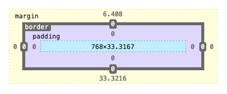

Colors in CSS
.primary {
color: orange;
/* or!!! */
color: #ffa500;
/* or!!! */
color: rgb(255, 165, 0);
/* or!!! */
color: hsl(38.8, 100%, 50%);
}
Units for measuring in CSS
- px - pixels
- % - percentage
- em - relative to the current element font-size
- rem - relative to the root element font-size
- vw - viewport width
- vh - viewport height
CSS Units
Units for measuring in CSS
.element {
font-size: 18px;
height: 100vh;
width: 100vw;
}
CSS Units
Box model

An example of HTML's box model
Spacing elements
Information
More Information
.primary {
border-color: red;
border-style: solid;
border-width: 3px;
margin-bottom: 10px;
padding-bottom: 20px;
}
Shorthand
.primary {
border-color: red;
border-style: solid;
border-width: 3px;
/* or!!! */
border: solid 3px red;
}
Pseudo-class selectors & interactivity
.link {
border: solid 3px red;
}
.link:hover {
border: dashed 3px orange;
}
Children + sibling selectors
div {
font-size: 30px;
background-color: red;
}
/* child selector */
div span {
font-size: 20px;
}
/* sibling selector */
div + div {
background-color: blue;
}